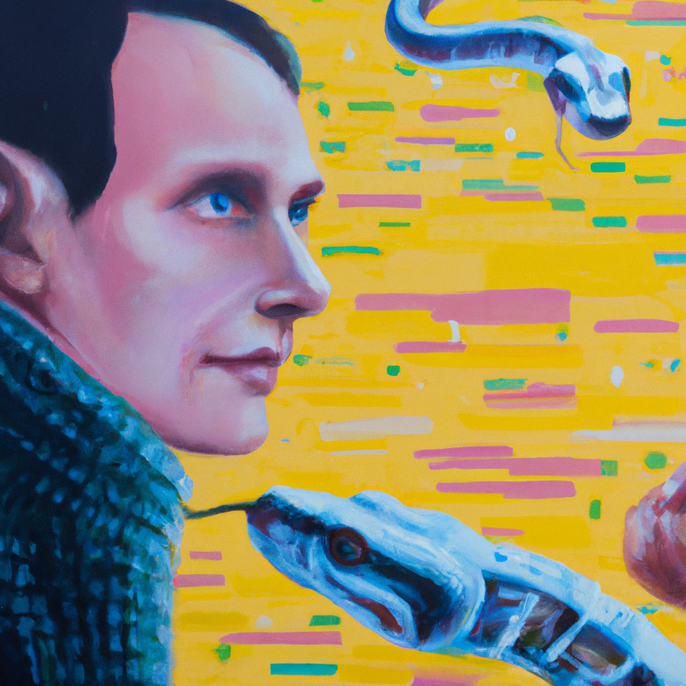

The future of Python and AI
>br />
>br />
Python is one of the most popular programming languages in the world, and its use in Artificial Intelligence (AI) is growing rapidly. AI is a field of computer science that focuses on creating intelligent machines that can think and act like humans. Python is a great language for AI because it is easy to learn and use, and it has a wide range of libraries and frameworks that make it easier to develop AI applications.>br />
>br />
In the future, AI will become even more important as it is used to automate tasks, improve decision-making, and create new products and services. Python will be at the forefront of this development, as it is already being used to create powerful AI applications. For example, Python is used to create machine learning algorithms that can be used to identify patterns in data and make predictions. It is also used to create natural language processing (NLP) applications that can understand and respond to human language.>br />
>br />
Python is also being used to create AI-powered applications for entertainment, such as video games and animated movies. Disney recently released a movie called “Zootopia” that was created using Python and AI. This movie used AI to create realistic animal characters and environments, and it was a huge success.>br />
>br />
As AI continues to develop, Python will remain an important language for creating AI applications. It is easy to learn and use, and it has a wide range of libraries and frameworks that make it easier to develop AI applications. Python will continue to be a powerful tool for creating AI applications in the future.